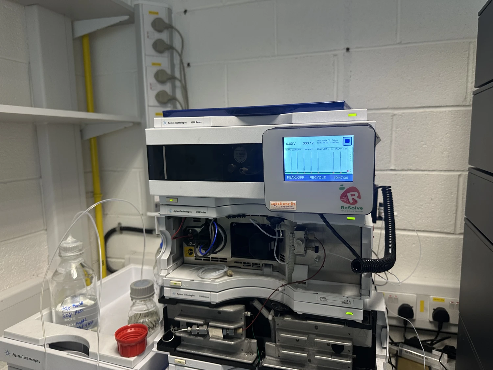

Demo data
Solvent recovery portfolio
See where mobile phase is being recovered and which labs need a closer look.

Solvent routing over time
Recorded mobile phase volumes by reporting period.
Returned to reservoir
Routed to waste
Focus or select a bar to see its volume.
Needs review
Reporting gaps and recovery changes.
Site comparison
Select a site to inspect its instruments.
| Site | Recovered | Recovery rate | Routed to waste | Reporting |
|---|
Run records
Select a record to see its volume balance.
| Sequence / date | Site / instrument | Injections | Processed | Recovered | Routed to waste |
|---|